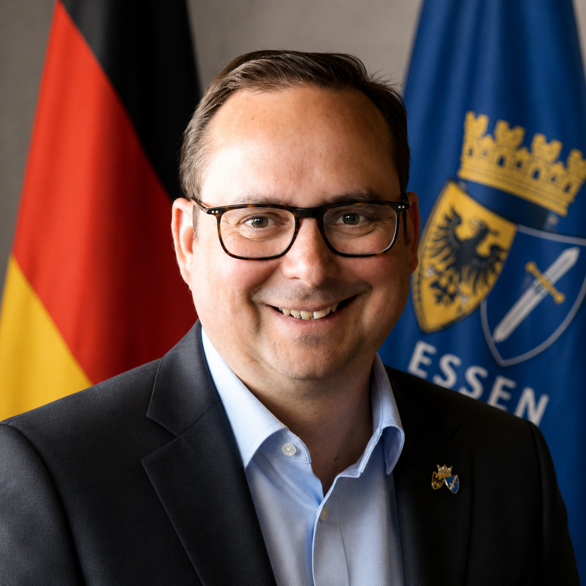
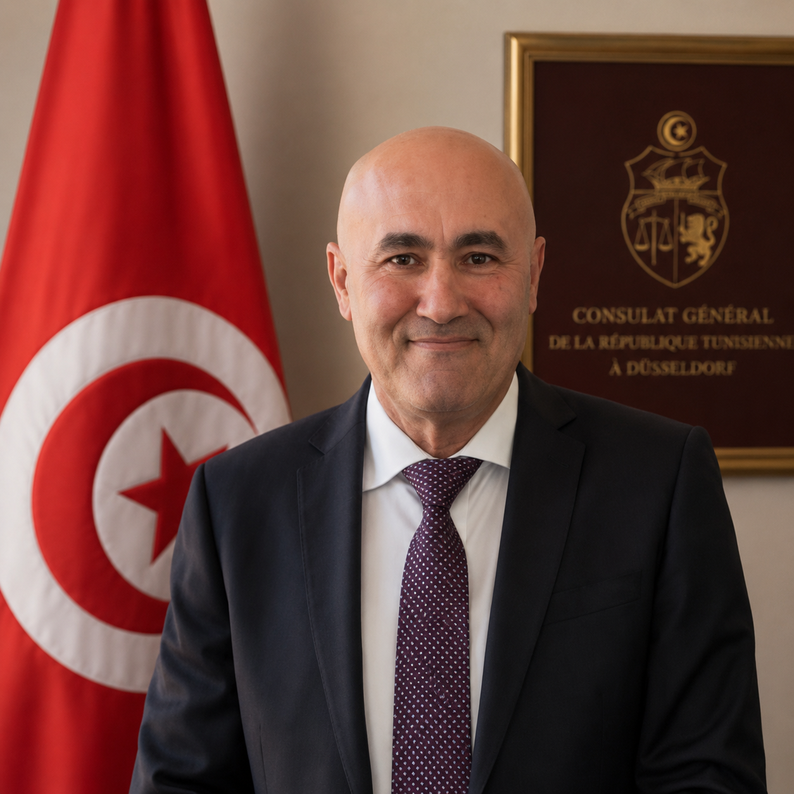

Erstes Deutsch-Tunesisches Business Forum
Business Forum Essen 2026
Forum Économique Essen 2026
Partnerschaften für Innovation, Nachhaltigkeit und Wachstum
Jetzt anmelden →Erstes Deutsch-Tunesisches Business Forum
Partnerschaften für Innovation, Nachhaltigkeit und Wachstum
Jetzt anmelden →Das Forum
Das Erste Deutsch-Tunesische Business Forum Essen 2026 bringt am 17. und 18. September 2026 im Rathaus Essen Unternehmerinnen und Unternehmer, Institutionen und politische Vertreter beider Länder zusammen, um konkrete Partnerschaften für Innovation, Nachhaltigkeit und gemeinsames Wachstum zu entwickeln.
Tunesien ist ein strategischer Partner Deutschlands am Mittelmeer — mit einer jungen Bevölkerung, wachsender Wirtschaft und einem klaren Bekenntnis zur europäischen Integration. Dieses Forum schafft den Rahmen, um die bilateralen Wirtschaftsbeziehungen auf eine neue Stufe zu heben: durch Wissenstransfer, Investitionspartnerschaften und den direkten Dialog zwischen Entscheidungsträgern.
Im Mittelpunkt stehen vier Schlüsselbranchen mit besonderem Kooperationspotenzial:
Das Programm umfasst Keynotes und strategische Panels am ersten Tag sowie praxisorientierte Workshops, B2B-Matchmaking und ein Abschlusspanel zur Zukunft der deutsch-tunesischen Partnerschaft am zweiten Tag. Als Ausblick ist eine deutsche Wirtschaftsdelegationsreise nach Tunesien im März 2027 geplant.
Gastgeber & Initiator

Thomas Kufen, geboren am 5. August 1973, ist seit Oktober 2015 Oberbürgermeister der Stadt Essen. Der CDU-Politiker engagierte sich zunächst im Landtag Nordrhein-Westfalen (2000–2005 und 2012–2015) sowie als Fraktionsvorsitzender der CDU im Essener Stadtrat (2010–2015), bevor er das höchste Amt der Ruhrgebietsmetropole übernahm.
Als Oberbürgermeister setzt Kufen auf den strukturellen Wandel Essens — von der einstigen Kohle- und Stahlregion hin zu einem modernen Standort für Wirtschaft, Bildung und nachhaltige Stadtentwicklung. Essen war 2017 Kulturhauptstadt Europas und positioniert sich heute als Knotenpunkt für Innovation und internationale Kooperation im Ruhrgebiet.
Seine Teilnahme am Deutsch-Tunesischen Business Forum unterstreicht das Engagement der Stadt Essen für internationale Wirtschaftspartnerschaften und die Stärkung bilateraler Beziehungen.

Mustapha Ziri ist seit Januar 2024 Generalkonsul der Tunesischen Republik in Düsseldorf und vertritt Tunesien in den Bundesländern Nordrhein-Westfalen, Hessen, Rheinland-Pfalz und Saarland — einer der wirtschaftsstärksten Regionen Deutschlands.
Seit seinem Amtsantritt hat Ziri den bilateralen Dialog systematisch ausgebaut. Im Februar 2026 wurde er von Oberbürgermeister Thomas Kufen im Rathaus Essen empfangen; im März 2026 traf er den Präsidenten des Landtags NRW, André Kuper, um Perspektiven der parlamentarischen und wirtschaftlichen Zusammenarbeit zu erörtern.
Das Deutsch-Tunesische Business Forum Essen 2026 geht maßgeblich auf seine Initiative zurück — anlässlich des 70. Jubiläums der diplomatischen Beziehungen zwischen Deutschland und Tunesien.
17.–18. September 2026
Fachpanels, Keynotes, B2B-Matchmaking und Workshops über zwei Tage — entdecken Sie alle Themen und Zeitangaben im Detailprogramm.
Zum Programm →Veranstaltungsort